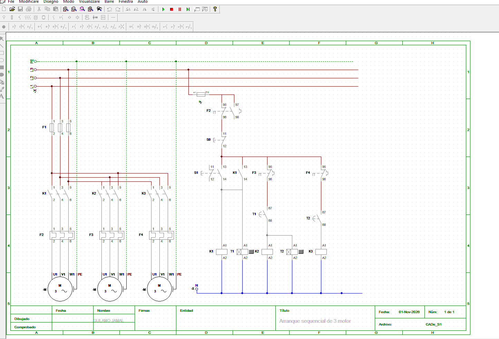
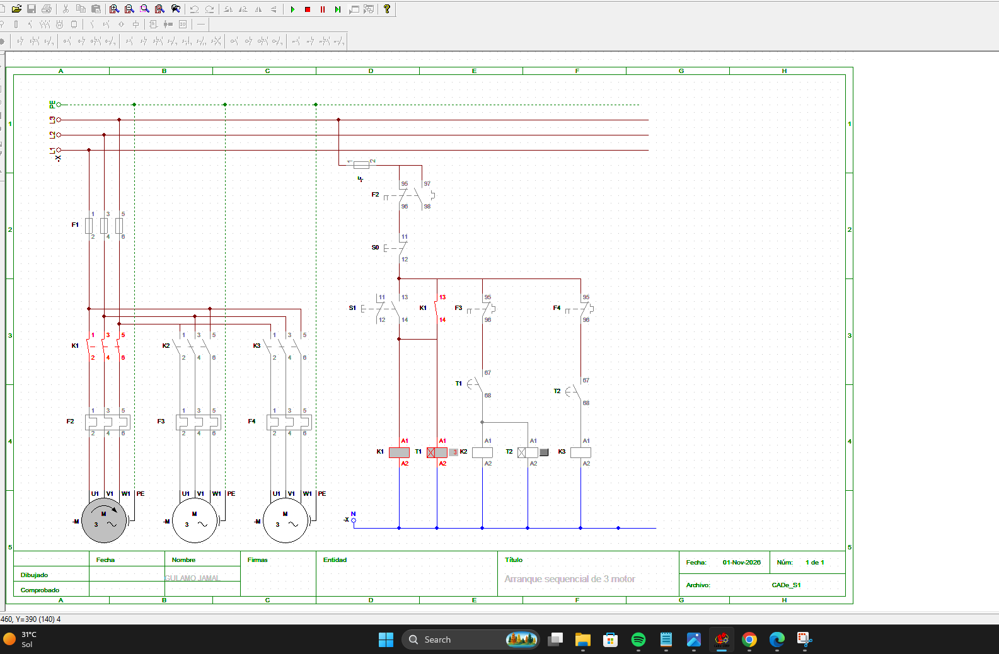
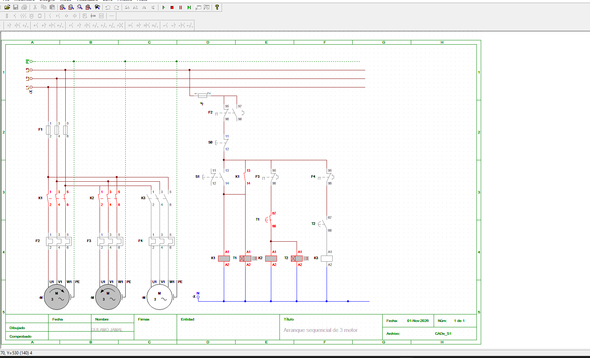

Arranque Sequencial Automático de 3 Motores
Comando eléctrico para arranque sequencial automático de três motores trifásicos (M1, M2 e M3). Um único botão arranca M1; M2 entra após 10 segundos e M3 após mais 10 segundos, com dois temporizadores.
Na versão manual, cada motor é accionado pela sua própria botoeira. Ver o arranque sequencial manual.
Funcionamento
- Pressionar o botão START (S1)
- O contactor K1 energiza e fica retido pelo seu contacto auxiliar (13-14)
- M1 arranca e o temporizador T1 inicia a contagem
- Após 10 segundos, o contacto de T1 fecha e o contactor K2 energiza
- M2 arranca e o temporizador T2 inicia a contagem
- Após mais 10 segundos, o contacto de T2 fecha e o contactor K3 energiza
- M3 arranca e os três motores ficam em funcionamento
- Pressionar STOP (S0) desliga todo o sistema
Componentes
- M1, M2, M3 → Motores trifásicos
- F1 → Fusíveis do circuito de força
- F → Fusível do circuito de comando
- K1, K2, K3 → Contactores
- F2, F3, F4 → Relés térmicos de M1, M2 e M3
- T1, T2 → Temporizadores com atraso à ligação (10 s)
- S0 → Botoeira STOP (NF)
- S1 → Botoeira START (NA)
Vídeo da simulação
O vídeo mostra o esquema a funcionar: M1 accionado pela botoeira, M2 a entrar após 10 segundos e M3 após mais 10 segundos, incluindo a simulação de uma sobrecarga.
Estado inicial: motores desligados
Com o sistema em repouso, todos os contactores estão desenergizados e os três motores parados.

Motor 1 ligado (K1 e T1)
Ao pressionar S1, o contactor K1 energiza e fica retido. M1 arranca e o temporizador T1 começa a contar os 10 segundos.

Motores 1 e 2 ligados (K2 e T2)
Passados 10 segundos, o contacto de T1 fecha e energiza K2. M2 arranca em conjunto com M1 e o temporizador T2 começa a contar.

Três motores ligados (K3)
Após mais 10 segundos, o contacto de T2 fecha e energiza K3. M3 arranca e os três motores passam a funcionar em simultâneo.

Simulação de Sobrecarga
O vídeo inclui a simulação de uma sobrecarga. Quando a corrente de um motor ultrapassa o valor nominal, o respectivo relé térmico actua e abre o seu contacto no circuito de comando, protegendo o motor contra danos térmicos e eléctricos.
O contacto do relé F2 está em série com todo o circuito de comando, pelo que uma sobrecarga em M1 desliga todo o sistema. Os contactos de F3 e F4 estão nos ramos de K2 e K3, respectivamente.
Aplicações
- Linhas de transporte e tapetes rolantes em cascata
- Sistemas de ventilação e exaustão
- Bombas e equipamentos que não devem arrancar em simultâneo
- Redução do pico de corrente na rede durante o arranque
Simulação realizada em CADe SIMU.